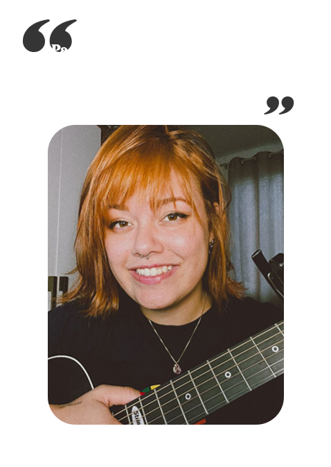

Ester é uma talentosa artista e compositora do Vale do Itajaí, que começou sua jornada na música aos 9 anos de idade, influenciada por sua mãe. Hoje, aos 24 anos, ela continua a perseguir seus sonhos, realizando apresentações por todo o Vale. Mãe do pequeno Mikkel, Ester se dedica a conciliar a paixão pela música com os desafios da maternidade.
Além de sua atuação como cantora, Ester é também uma presença cativante no Instagram, onde compartilha suas criações e reflexões com um público crescente e dedicado. Seu canal é um espaço onde a arte poética ganha vida, proporcionando aos espectadores uma imersão única em suas emoções e pensamentos.